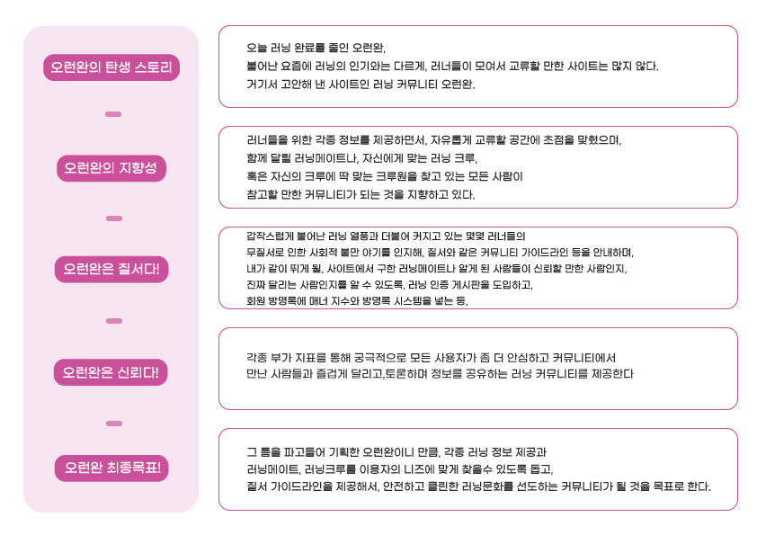
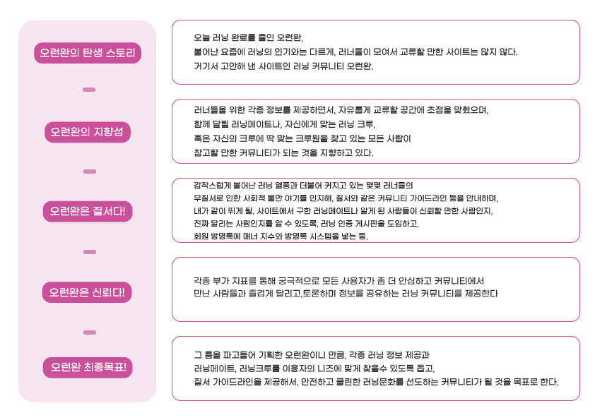
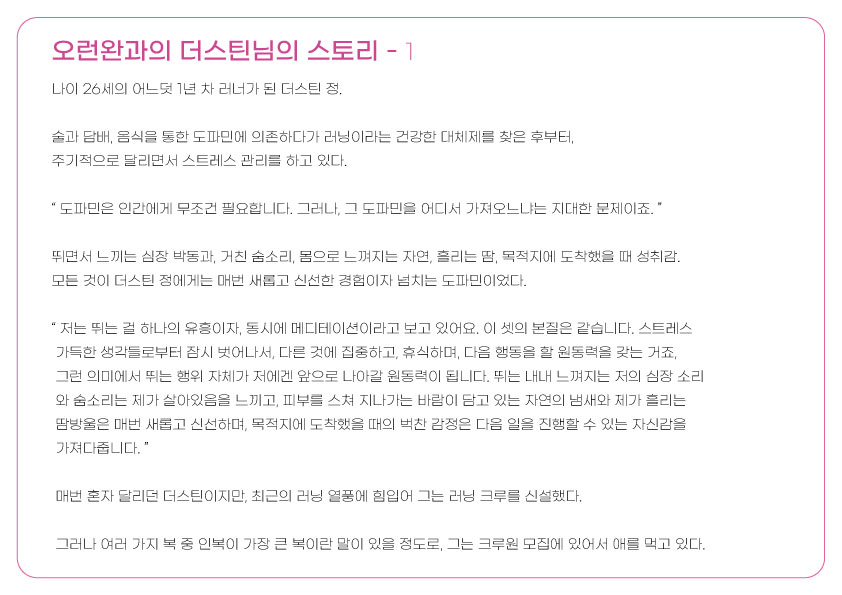
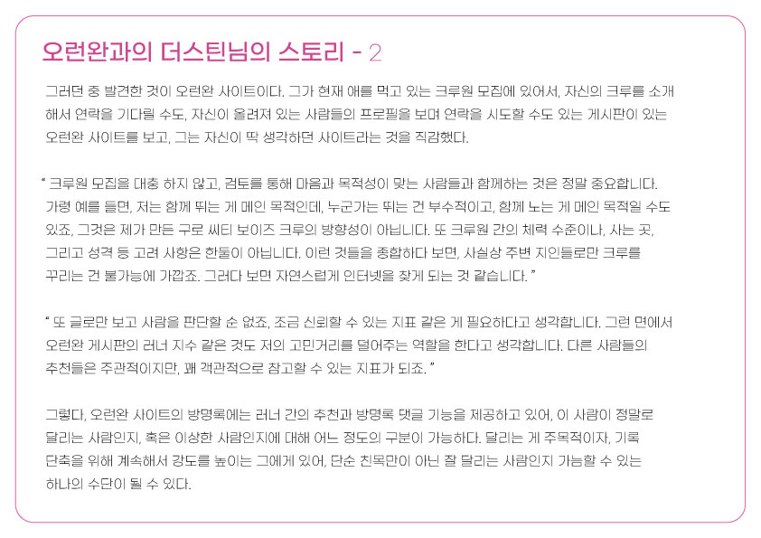
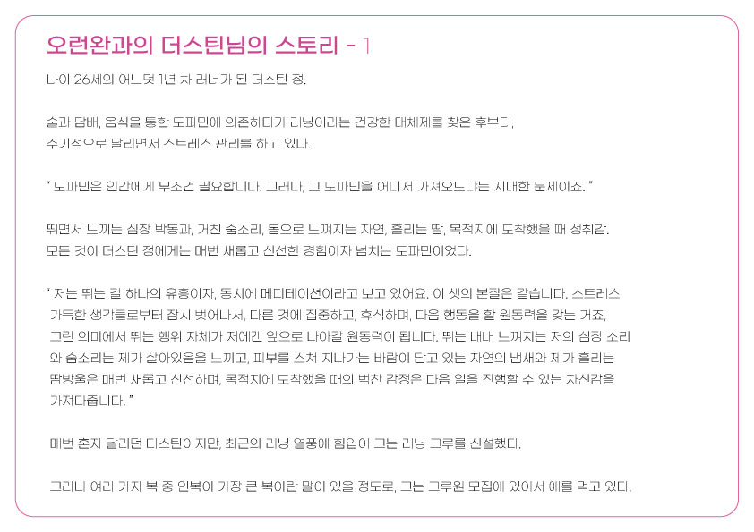
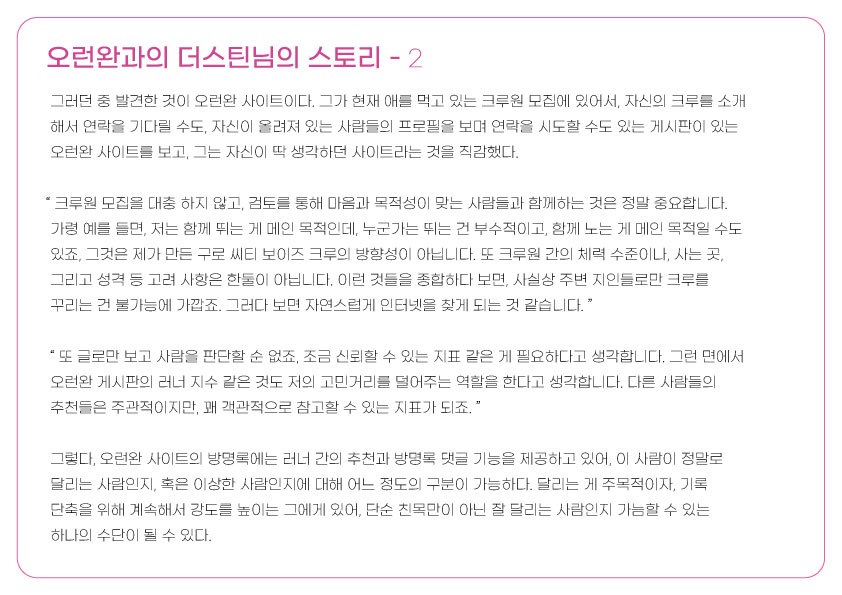

1차 프로젝트에서 얻은 것들이 정말 많습니다. 웹 디자인과 코딩 입문을 학원에서 시작해서, 1달 간 일러스트, 포토샵, html과 css의 기본을 배우고 시작한 프로젝트 오런완. 약 4주간의 기간동안 열심히 만들었는데요, 이 프로젝트 기간동안 코딩적 생각에 있어서 획기적인 발전을 이뤘다고 생각합니다. 가장 주된 목적은, 1달간 배운 모든 걸 활용하자는 생각이었습니다. 머릿속에 떠오른 구성들을 다른 페이지를 참조하지 않고 구현해냈던 과정 속에서, 정말 여러가지 시도가 있었고, html과 css도 여러번 수정을 거치며, 페이지를 만든 시간적 서순에 따라 실력 발전을 느꼈습니다. 시간적인, 그리고 역할적인 문제들 때문에 둘 다 동등한 겸업을 했지만, 아무래도 저는 코딩쪽에, 팀원인 백유진님은 디자인쪽에 더 치중했던 프로젝트가 아니었나 생각됩니다. 물론 둘 다 코딩과 디자인을 넘나 들며 프로젝트를 진행했지만요. 디자인적인 측면에서 저 스스로의 부족함을 많이 느끼기도 했습니다. 팀원인 백유진님에게서 디자인 감각을 많이 배우기도 하는 시간이었네요. 이 소중한 경험을 토대로 2차 프로젝트도 제대로 뽑아내야 겠단 욕심이 듭니다. 아, 그리고 회원가입 페이지 관리자의 편지에는 404페이지와 footer에 관한 내용도 있으니 잊지 말고 봐주시면 감사하겠습니다! 저희의 결과물을 봐주셔서 감사합니다! - 정명기 뭐라 그래야 될까. 생각하고 말하겠습니다. - 백유진 -2024년 12월 1일. 정명기, 백유진 (이하, Team. 오런완) 올림.


 



 


